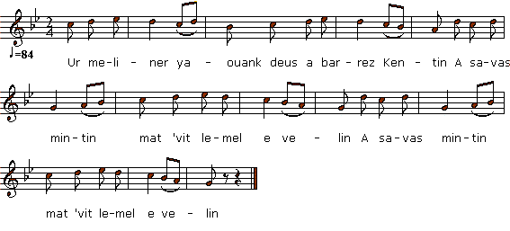

Ar Miliner Yaouank
Le jeune meunier - The Young Miller
Texte recueilli par H. Guillerm
Auprès de Hortense Le Guellec, de TréguncPublié dans "Chants populaires bretons du Pays de Cornouailles" en 1905
Recueil de 25 chansons avec partitions et notes de H. Guillerm, publié à Rennes chez Francis Simon en 1905

Mélodie
"Ar Miliner Yaouank" de "Chants populaire du Pays de Cornouailles"
Arrangement par Christian Souchon (c) 2011
Source: le site de M.Quentel (voir liens)
|
Ar Miliner Yaouank 1. Ur meliner yaouank deus a barrez Kentin A savas mintin mat 'vit lemel e velin (bis) 2. Dre c'hras Santez Anna, ar maen a zo savet Ar meliner yaouank n'en deus bet droug ebet 3. Pell zo em on klevet ma mestrez zo dime'et Deus an noz pe an deiz me yelo d'he gwelet 4. "Diboñjour deoc'h ma zad, diboñjour deoc'h laran Ha c'hwi akordfe din ar pezh a c'houlennan ? 5. - O ya, o ya, ma merc'h-me, ne zinac'han ket Eureujiñ a zo ret d'an hi'i m'oc'h dime'et 6. - N'eus ket beleg ebet 'barzh ar departamant Refe din eureujiñ gant 'n'hini 'm bo ket c'hoant" 7. Goude an amzer c'hlav teuio an amzer vrav Goude ar boan spered teuio ar joaüsted |
Le Jeune Meunier 1. A Quintin, son village, Un meunier jeune et sage, Tôt se lève. Hors d'usage, Est sa meule: il doit l'ôter. (bis) 2. Grâce à Dame Sainte Anne, Et à son fidèle âne, Par le meunier la panne Est réparée sans effort . 3. - On dit que mon aimée Dès longtemps s'est mariée. Je l'aurai rencontrée Ce jour même, ou bien ce soir. 4. - Père, il faut qu'on s'entende. Mon impatience est grande: Ce que je vous demande Par vous m'est-il garanti? 5. - J'entends qu'à mes sentences L'on accorde confiance. Dès lors qu'on se fiance, C'est à son futur mari. 6. - Non, de prêtre il n'est guère Dans tout le Finistère Qui ferait que j'adhère A ce projet odieux." 7. Lorsque la pluie s'achève, Le beau temps la relève. Après les mauvais rêves Reviennent les jours heureux. Traduction: Christian Souchon (c) 2011 |
The Young Miller 1. There was a young miller In the parish Quintin, Got up early in the morning To remove his millstone. (twice). 2. Thank God and Saint Anne The stone was lift off The young miller unhurt Did overcome the strain. 3. - It's been a long time since I heared That my beloved is wed This very day, maybe tonight I'll go and visit her. 4. - Good morning, father, Good morning I tell you. Do you grant me My request? 5. - Yes, I do, daughter, I am as good as my word: A girl must marry the one To whom she is betrothed. 6. - There is no priest whoever Within the "département" Who could get me to marry A man I dislike." 7. After rainy weather Will come sunshine. After low spirit Will come bliss. |
Table des chants de Guillerm
Milinerez Pontarv ("La meunière de Pontaro" du Barzhaz Breizh)